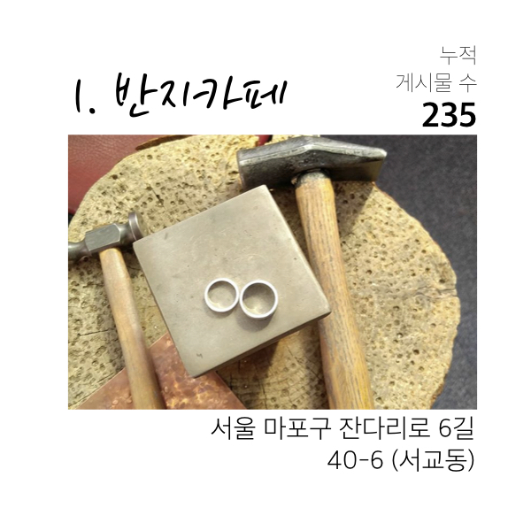
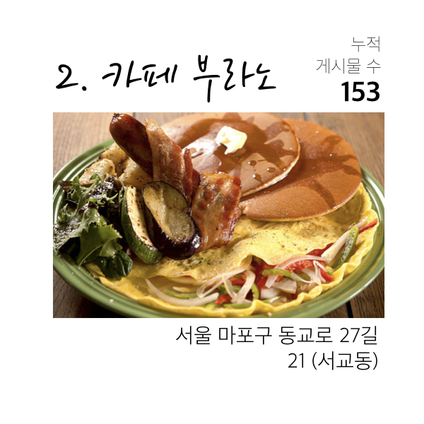
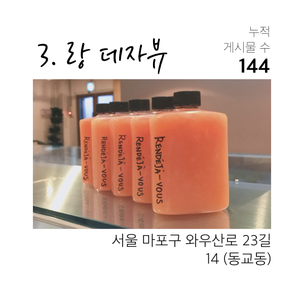
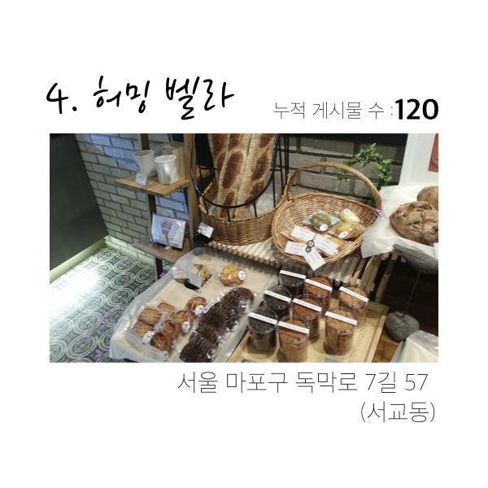
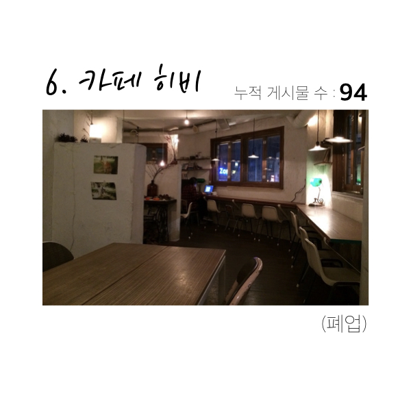
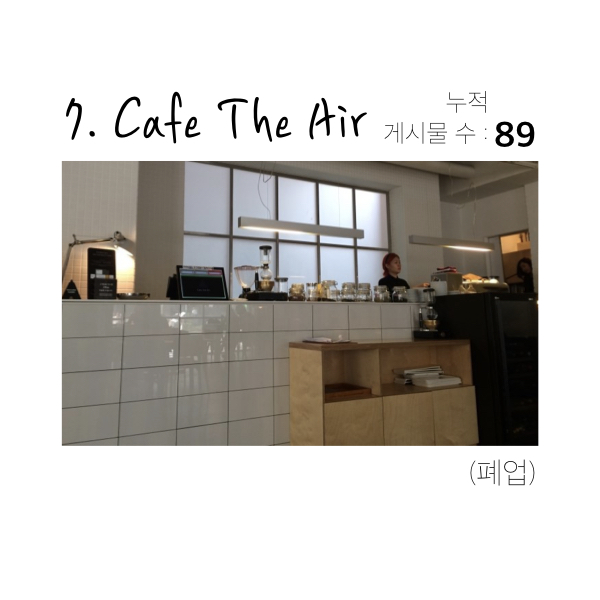
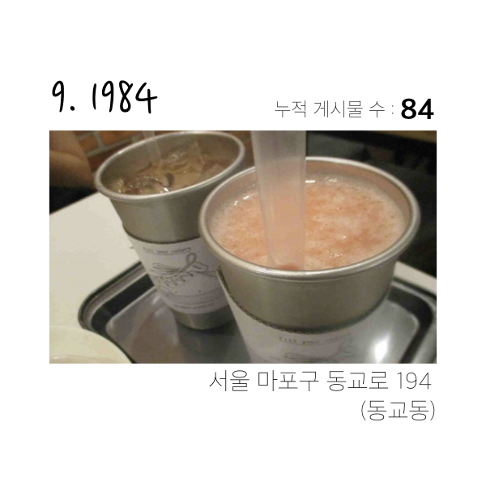

홍대, 어디까지 가봤니?
2018 Naver Blog Hongdae Trend Report
강민경, 강채원, 송서영, 정지혜, 홍다영

홍대는 ‘홍익대학교’의 줄임말로, 처음에는 2호선 홍대입구역을 시작으로 홍익대학교까지 이르는 대학가를 뜻하는 말로 사용되었습니다.
그러나 지금은 서울의 서쪽 끝에 위치한 마포구의 서교동, 합정동, 상수동, 연남동, 그리고 서대문구까지도 아우르는 하나의 고유한 지역으로 자리잡았습니다.
패션, 오락, 음식 등 다양한 상업지구들이 밀집해 있으며, 현재까지도 예술적인 거리 문화와 더불어 서울의 최대 명소 중 하나로 손꼽히고 있습니다.
그런데 혹시 ‘이 추세라면 수 십년 내에 전세계가 홍대가 될 것이다.’라는 말, 들어보셨나요?
연남동은 언제부터 홍대였을까요?
그리고 과연 사람들은 어디까지를 홍대로 인식하고 있을까요?
Daitgirls2 E조의 프로젝트는 과연 어디까지를 홍대라고 부를 수 있을까? 라는 궁금증에서 시작되었습니다.
그리고 우리는 단순한 추측에 그치는 것이 아니라 이 가설을 객관적이고 과학적인 방식으로 분석하여 검증해보고자 합니다.
우리의 프로젝트에서는 map data의 시각화를 통해 따른 ‘홍대’의 확장성과,
이를 넘어 과거의 데이터를 계층적으로 구성함으로써 ‘홍대’에 관심있는 누구에게나 Insight를 제공하고자 합니다.
풍부한 상권 정보를 얻을 수 있는 네이버 블로그의 데이터를 타겟으로,
2012년 1분기부터 2018년 2분기까지의 지도 데이터를 크롤링하였습니다.
홍대 상권 중 가장 빈도수가 높은 키워드 중 하나인 ‘홍대 카페’를 메인 키워드로 하여,
총 6개년 24분기의 흐름에 따른 ‘홍대’의 확장성을 파악하였습니다.
네이버 블로그의 포스팅 중 ‘홍대 카페’라는 키워드를 포함한 게시물의 좌표 정보를 크롤링하여, 데이터를 수집하였습니다.
지도상 하나의 점은 카페 하나의 좌표를 나타내며, 카페가 언급된 횟수가 많을수록 점의 반경이 늘어납니다.

위 지도는 2012년 9월(하반기)부터 2018년 6월(상반기)까지, 총 6개년의 분기에 따른 전체적인 카페 분포 양상을 보여줍니다. 이는 홍대의 핵심 지역의 변화를 반영하며, 기존의 홍익대학교 앞의 거리에서 더 넓은 범위로의 확장성을 확인할 수 있습니다.
그 중에서도 우리는 연남동, 홍익대학교를 둘러싸는 2개의 역인 합정역, 상수역 그리고 책거리를 기준으로 ‘홍대’의 지역 확장성을 살펴보겠습니다.
이하 지도는 카페의 언급 빈도 보다 위치의 경향성을 더 잘 드러내기 위해 log scale을 활용했습니다.
점의 반경 차이를 줄여줌으로써 우리는 보다 객관적으로 지역의 확장 범위를 확인할 수 있습니다.
연남동, 홍익대학교를 둘러싸는 2개의 역인 합정역, 상수역 그리고 책거리를 기준으로 ‘홍대’ 지역 확장성을 살펴보겠습니다.
경의선 숲길 중, 홍대입구역 근처부터 가좌역 인근 연남동 구간은 2015년 6월에 개방되었습니다.
미국의 맨해튼 센트럴파크와 닮았다 하여 연트럴파크라는 별칭을 가지고 있습니다.
연트럴 파크의 영향으로 인근 홍대의 상권이 연남동으로까지 확장되었으며 번잡한 홍대의 분위기와는 달리 도심 속 여유를 즐기려는 젊은이들이 많이 찾고 있습니다.

2000년대 초반과 달리 홍익대학교 인근 서교동은 상가 임대료가 폭등하였습니다.
이에 젊은 예술가들과 자영업자들이 비교적 저렴한 상수동과 합정동으로 이동하면서 자연스럽게 "홍대"가 확장된 셈입니다.
가난한 예술가들이 홍대의 서부 개척자의 역할을 한 것으로 볼 수 있습니다.

2016년 10월 28일, 홍대입구역 6번 출구부터 시작하는 경의선 책거리의 조성이 완료되었습니다. 홍대 책거리는 독서문화와 출판산업의 장려를 위해 조성된 책 테마 공간입니다. 이후 2017년부터 2018년에 걸쳐 신촌로와 서강로9길 사이를 따라 점차 밀집되어가는 카페 분포를 확인할 수 있습니다.

그렇다면, 전체 6년 간의 포스트들을 토대로 보았을 때, 어떤 카페들이 "홍대"의 중심이었을까?
      년도별(2012 - 2018) 카페 순위를 알아봅시다.


실제 데이터를 통해 알아본 결과, 우리는 '수 십년 내에 전세계가 홍대가 될 것이다'라는 농담을 조금은 진담처럼 말할 수 있게 되었습니다. 홍대 카페의 밀집도가 높을 수록 채도가 높은색으로 채워지도록 표현한 heatmap을 통해서 우리는 이를 보다 확실하게 확인할 수 있습니다.

본래 홍익대학교 인근을 의미했던 ‘홍대’는 특히 연남동 방향으로 강한 signal을 보이고 있고 상수동과 합정동 방향으로 점차 확장되고 있음을 알 수 있습니다. 하나의 법정동에서 다섯개의 법정동을 아우르게 된 홍대는 망원동, 연희동 등의 지역과도 맞닿아 있어 이후의 확장성을 기대하게 합니다.
우리는 이 프로젝트를 통해 변화가 빠른 홍대 상권의 특성을 파악할 수 있었습니다. 과연 몇년 후에는 어디까지를 홍대라고 말할 수 있을까요? 언젠가 행정 구역도 특정 지명도 아닌 이 독특한 대한민국의 명소 "홍대”가 지명이 될 수도 있겠구나라는 심심한 고민을 던집니다.
- ‘홍대’ 연관 검색어 중 카페 이외에도 맛집, 버스킹, 클럽, 데이트 등등의 키워드가 존재하므로 ‘홍대’의 확장성을 보다 포괄적인 관점에서 해석할 수 있는 가능성이 존재합니다.
- ‘홍대’의 상권의 임대료 경향과 확장성 간의 유의미한 관계가 존재하는지를 분석해 볼 수 있습니다. 이를 통해 상권이 유지되기 위한 조건을 제시할 수 있습니다.
- Python
- Slack to communicate
- Github to collaborate
Contributors
질문 폭탄을 즐겁게 받아 주신 애란 선생님과 배로 선생님,
우리를 위해 늘 애써주신 김영웅 님 외 데잇걸즈 운영진분들,
함께 나아가는 데잇걸즈 2 일동,
그리고 아픈데도 불구하고 함께해준 다영님